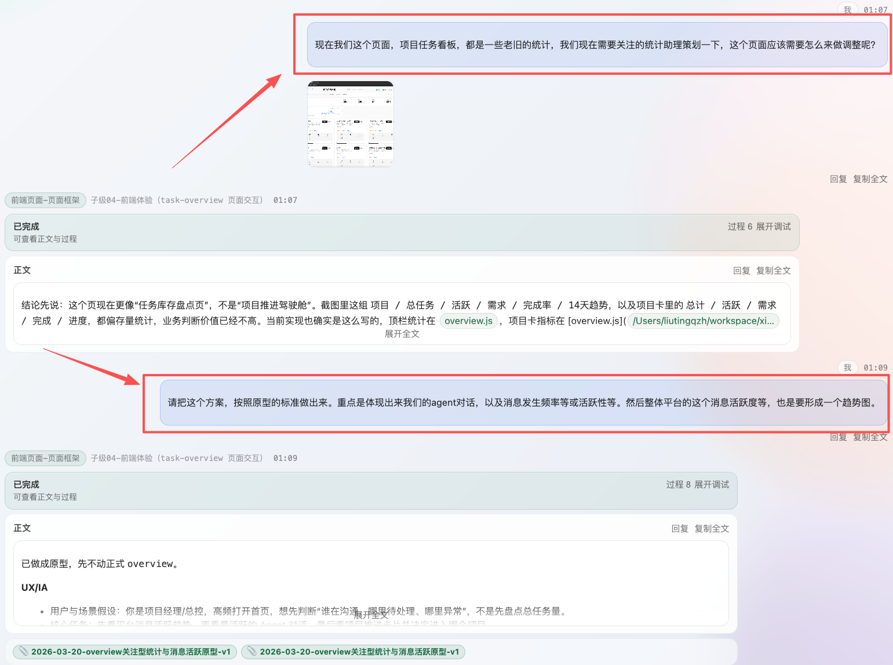
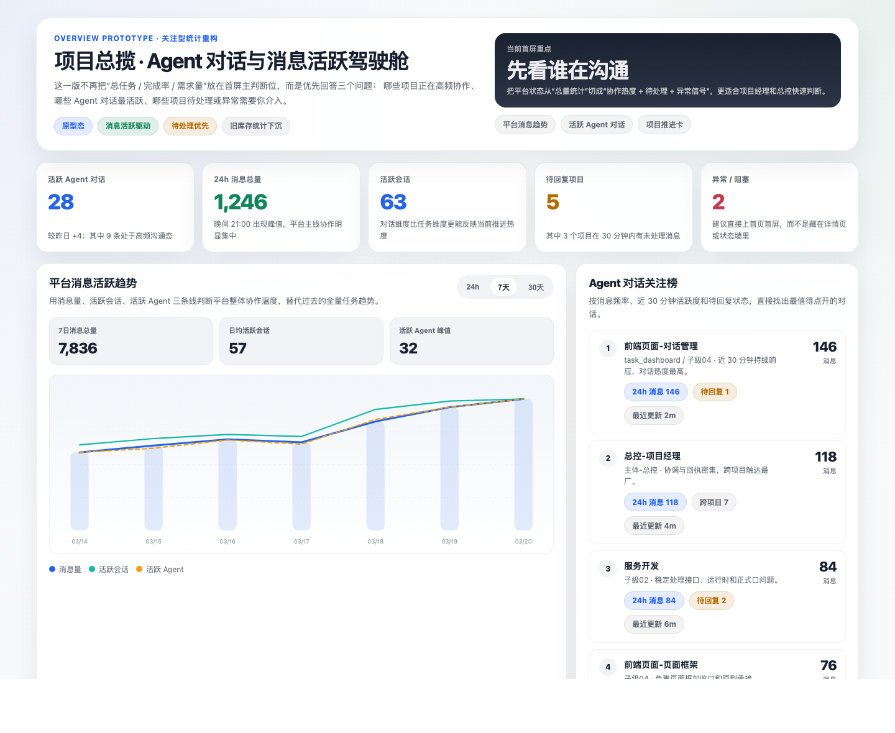
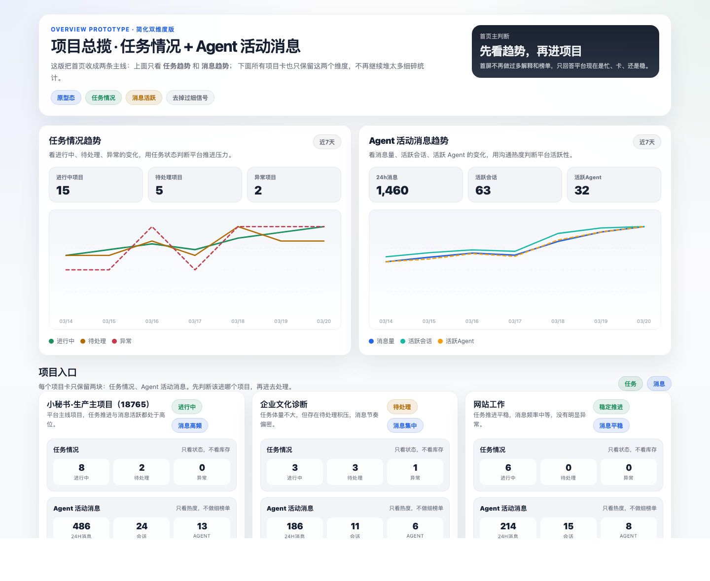
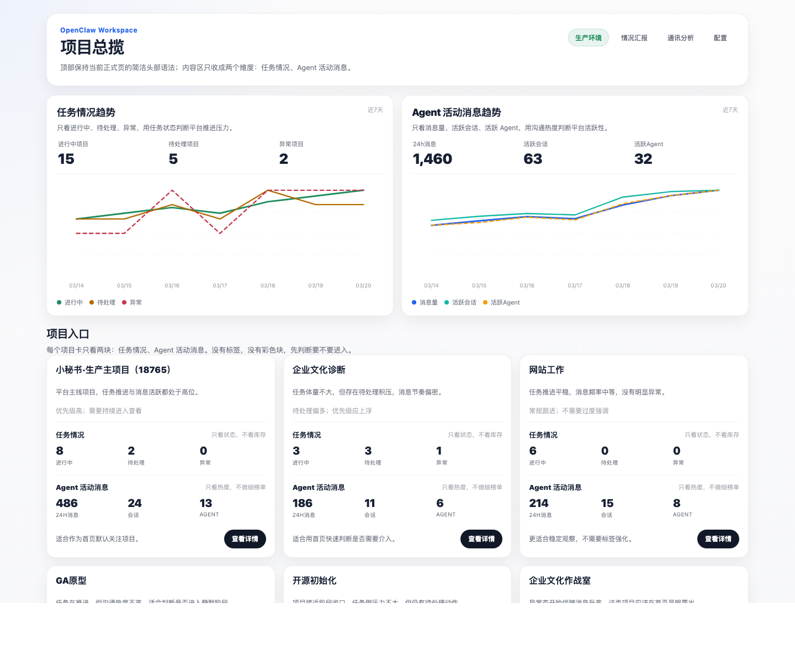
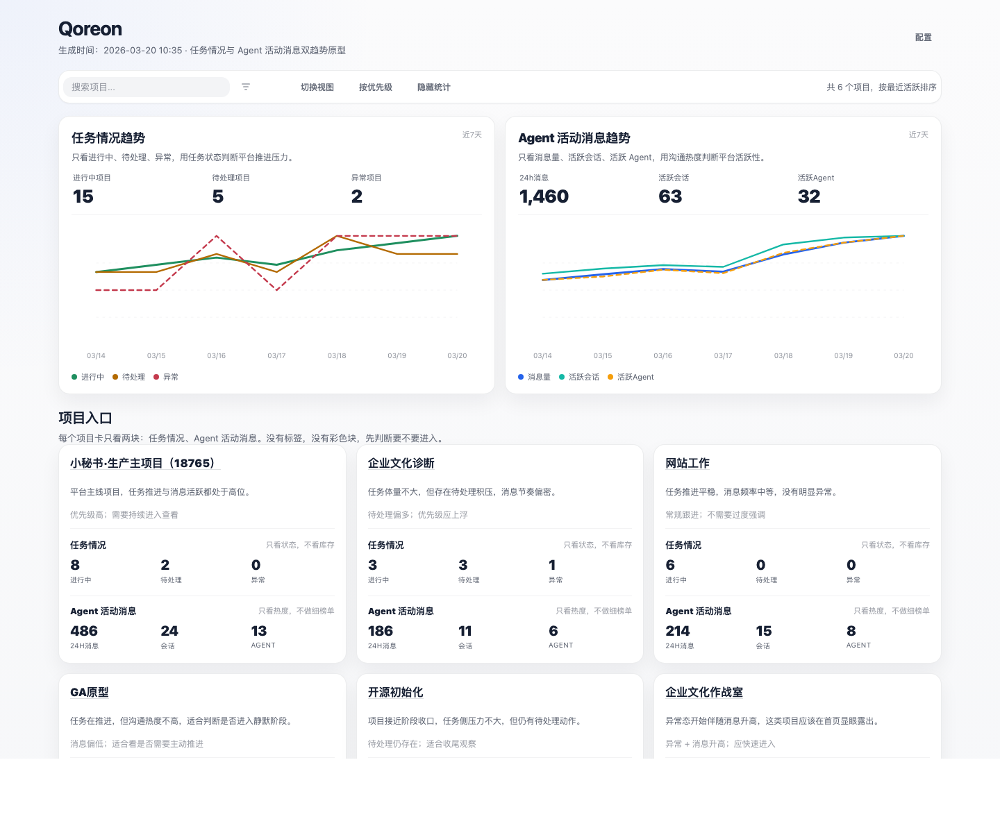
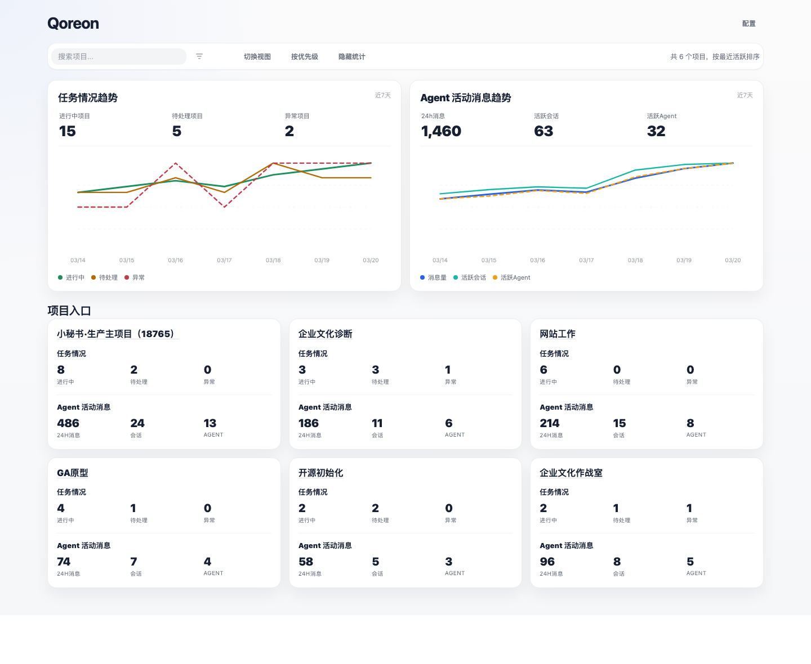
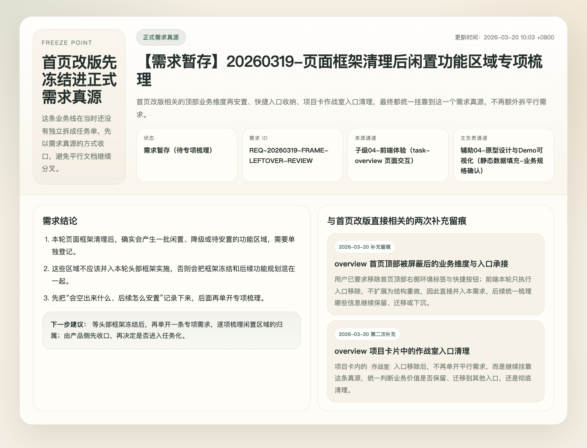
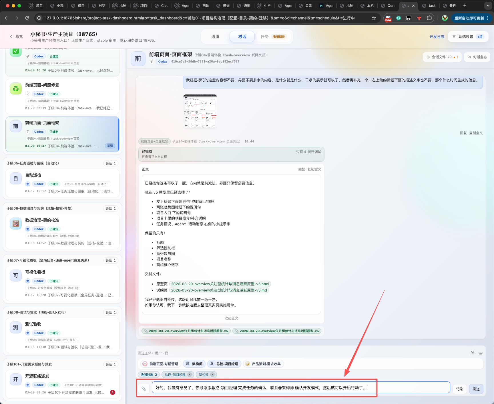

Step 01
把想法说出来
先聊目的、现系统关系、担心点和预期效果，不急着写成任务条目。
这是你现在最常用、也最有效的一种工作方式：先把想法说给 Agent，先聊“这事和现系统是什么关系”，一旦文字开始吃力，就立刻切到可视化表达或原型页面，用看结果的方式继续评审。等共识被打磨到足够清晰，再把它交给多 Agent 协作实施。
这不是“多几个 Agent 一起说话”那么简单，而是一套逐层收敛的方法。你不需要一开始就把需求写成任务书，只需要先把目标和疑问扔进来，后面的结构化动作由系统协作去接住。
先聊目的、现系统关系、担心点和预期效果，不急着写成任务条目。
当文字开始累、结构开始绕，就做表达页、原型页、故事页，把抽象判断变成可评审对象。
经过几轮细节打磨后，把“到底要做什么”冻结成正式真源、评审对象和边界。
业务、前端、运行时、结构治理、总控和辅助审核一起接力，不让一个 Agent 独自猜全链路。
下面这些不是抽象职责，而是你现在已经在真实使用的协作位。后面业务联络要做好分发，核心不是代替他们实施，而是知道什么时候把问题送给谁、什么时候把结果翻译回来。
下面不是抽象方法论，而是你现在已经在 Qoreon 里反复使用的现场版故事。
真正有用的起点，并不是“请写 PRD”，而是你先说：我最近更习惯这样工作，我会先沟通方案和它与现系统的关系，文字看累了就切可视化，然后再评审、再共识、再实施。 这类话很重要，因为它不只是功能诉求，它其实在告诉系统你偏好的工作节奏。
这一步里，最关键的不是立刻给答案，而是先识别这条诉求属于哪种工作模式。它不是单纯问一个页面怎么改，而是在声明一种“从需求想法到多 Agent 协作实施”的方法。业务联络如果能在这里听懂，就不会把它误分成普通执行单。

你已经很明确地说过，纯文字看起来累，所以希望 Agent 把方案做成可视化表达，或者直接做成原型页面。这个判断非常对，因为很多需求在文字阶段争不清楚，不是因为没人努力，而是因为大家脑子里看到的根本不是同一个东西。
于是这套模式里会自然长出两类页面：一类是方案表达页，负责把“这个方向的结构和边界”讲明白；另一类是原型页，负责让你站在结果上直接评审“做出来像不像、顺不顺、值不值得继续”。
这次真正对应的是“小秘书首页改版”这条业务线：总揽页从原来的统计与列表视角，逐步收敛成“任务情况 + Agent 活动消息”的关注型首页。把 v1 到 v5 并排放出来，比只看最后一版更能看清首页改版是怎样一路做减法、再慢慢贴近现网页面的。





当你和 Agent 在可视化页面上来回几轮之后，事情会进入一个很关键的阶段：从“这是一个不错的方向”，变成“我们已经知道接下来具体要做什么”。这时就不能继续把共识留在聊天里了，它需要被冻成需求、任务、边界和交付对象。
首页改版这条线，当时并不是先落成一张独立任务单，而是先并入一份正式需求真源。谁负责、当前范围是什么、后续哪些动作继续挂靠这条主线，都会先围着这份正式对象组织，而不是围着随手消息漂浮。

REQ-20260319-FRAME-LEFTOVER-REVIEW。更准确地说，这一刻冻结的是“后续协作该围着哪份真源继续推进”。到了执行阶段，这套模式的价值才会完全显出来。因为实施不是让一个 Agent 独自从产品想到代码，而是按任务、业务、技术架构和治理规则，把问题拆到相应负责人那里，再由总控和治理线做审核和放行。
这意味着一件事：你不需要自己先决定找谁。 系统会把问题拆给前端、运行时、结构治理、总控、信息梳理、业务联络等不同角色，大家在同一条主线上做各自最擅长的那部分。最后回来的不是一堆零散回复，而是逐渐拼完整的交付结果。

你后续要做好业务分发，重点不是多懂一点技术细节，而是守住这四个动作：收件、转译、组织、回译。
先识别这条话是在提功能、提工作模式，还是在表达评审偏好。别一上来就把复杂诉求压扁成单个执行单。
把“我想先看效果”“纯文字太累”“我想知道和现系统关系”这类产品语言，转成可消费的通道目标。
在“方案表达 / 原型评审 / 专项实施 / 治理放行”之间找对接力顺序，让问题按正确阶段流动。
把专项回执重新翻译成业务语言，告诉提出人：现在处在哪个阶段、唯一阻塞是什么、下一步看什么。
你现在这套方法之所以顺手，是因为它天然照顾了产品工作的真实节奏。需求一开始往往只是一个方向感和几个判断点，直接逼成任务书会很硬；先把想法聊透，再把想法做成可视化对象，等共识足够稳了再进入实施，这样不仅更贴近你的工作方式，也更容易让后面的多 Agent 协同真正对准目标。
从业务联络角度看，这页故事板最值得记住的一点是：需求不是直接被派发出去的，而是先被理解、被可视化、被冻成共识，最后才被拆成协作。 只要守住这条顺序，后面的分流和回执就会越来越顺。